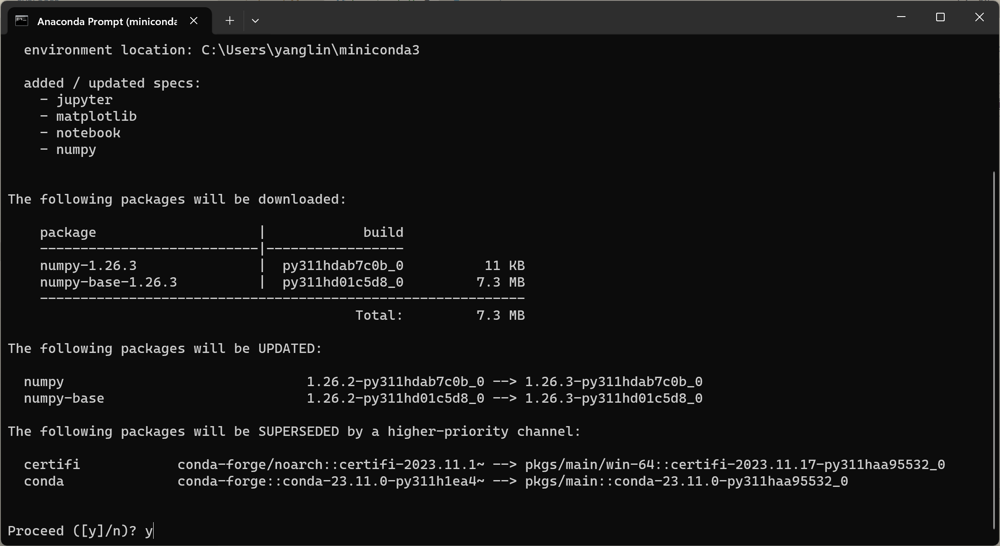
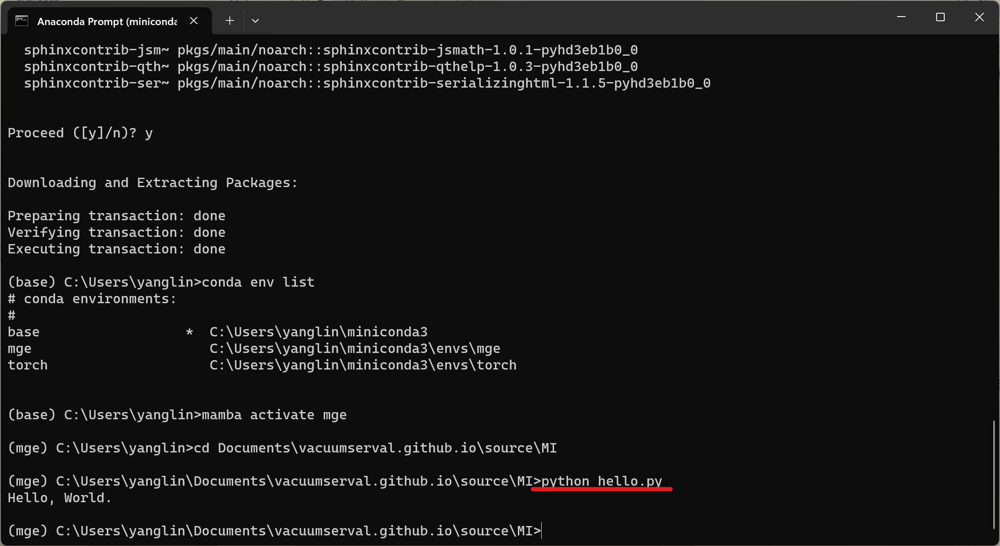
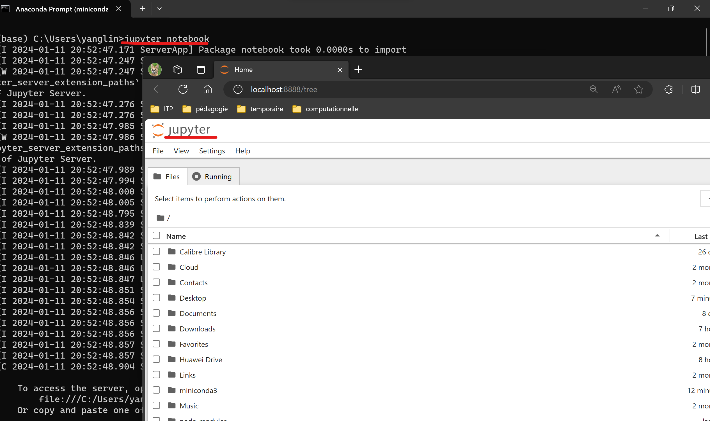
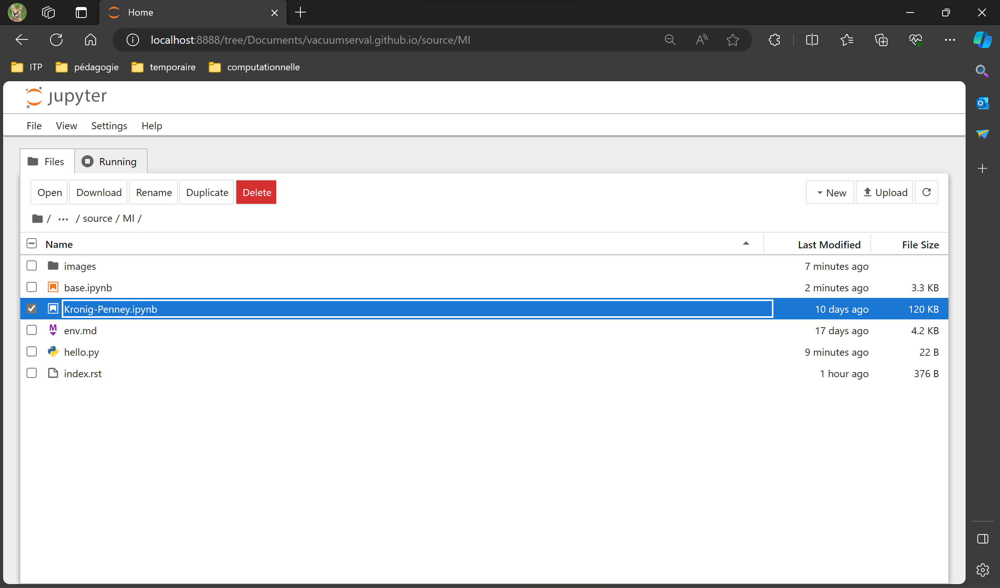
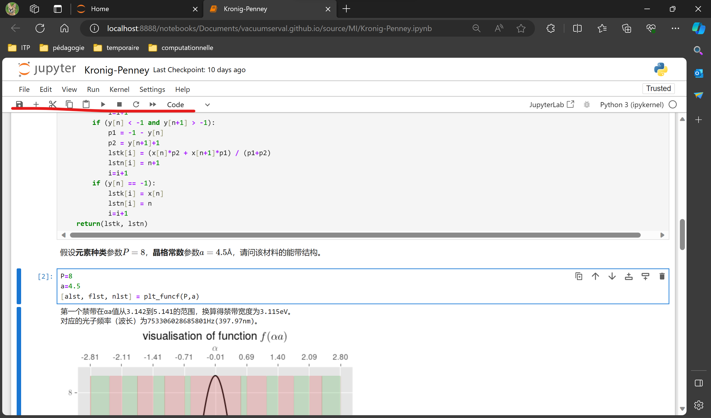

The Computational Materials Infrastructure
Conda Environment for Python
Conda is an open-source, cross-platform, language-agnostic package manager and environment management system. It was originally developed to solve difficult package management challenges faced by Python data scientists, and today is a popular package manager for Python and R. To (efficiently) use Python, the first thing we need to do is to install (mini)conda, by simply downloading the latest miniconda installer, clicking “next”, until you see and check the “Register Miniconda3 as my default Python 3.11” option in the “Advanced Installation Options” step.

To run Python code and to manage Python environment, the “Anaconda prompt” app shoule be called.

Python Packages
A Python package usually consists of several modules, where “module” is a Python program that you import to make your code work more efficiently. In this tutorial, we need the “numpy”, “matplotlib”, “jupyter”, “notebook” packages. To install them in your Python “base” environment, simply call the “Anaconda Prompt” and type
conda install numpy matplotlib jupyter notebook
If it prompts out something, just input y and enter.

Run Python Code
There are multiple ways to run python code.
Save As a .py File (not recommanded)
You may save your Python code to a text file (usually end with a .py suffix), for example, copy and past
print('Hello, World.')
to a file hello.py, then call the “Anaconda prompt” to run the code:

As you can see this method is not interactive, the other method (Jupyter Notebook) is recommanded!
Jupyter Notebook (recommanded)
The Jupyter Notebook is a web-based interactive computing platform. The notebook combines live code, equations, narrative text, visualizations and more. The Python code can be saved to .ipynb format and you may use Jupyter notebook to run it interactively!
For example, here we have a Jupyter Notebook file for the Kronig-Penney model, please click here to download it.
Then, in the “Anaconda prompt”, type
jupyter notebook
to activate the web-based interactive notebook.

In the jupyter notebook, browse and navigate the directory in which you downloaded ‘Kronig-Penney.ipynb’.

Click and run Python code interactively:
